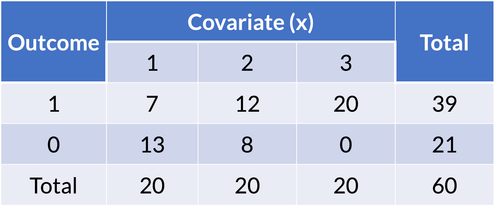
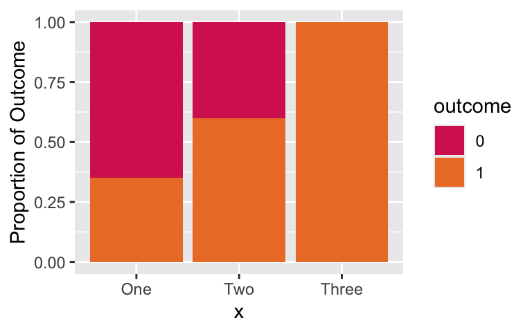
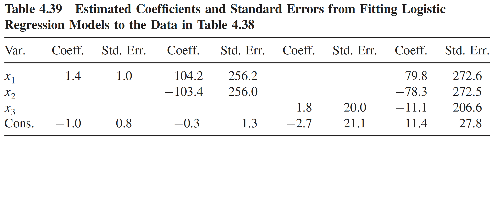

Lesson 13: Numerical Problems
Learning Objectives
Identify and troubleshoot logistic regression analysis when there are low or zero observations for the cross section of the outcome and a predictor
Identify and troubleshoot logistic regression analysis when there is complete separation between the two outcome groups
Identify and troubleshoot logistic regression analysis when there is multicollinearity between variables
Three Numerical Problems
Issues that may cause numerical problems:
- Zero cell count
- Complete separation
- Multicollinearity
- All may cause large estimated coefficients and/or large estimated standard errors
Learning Objectives
- Identify and troubleshoot logistic regression analysis when there are low or zero observations for the cross section of the outcome and a predictor
Identify and troubleshoot logistic regression analysis when there is complete separation between the two outcome groups
Identify and troubleshoot logistic regression analysis when there is multicollinearity between variables
Zero cell count in a contingency table
- If no observations at any intersection of the covariate and outcome
- Zero cell in a contingency table should be detected in descriptive statistical analysis stage
- Example of one covariate with outcome:

Zero cell count: example (1/3)
- Example of logistic regression with one covariate:
ex1_m = glm(outcome ~ x, data = ex1,
family = binomial)
Zero cell count: example (2/3)
- Example of logistic regression with one covariate:
ex1_m = glm(outcome ~ x, data = ex1,
family = binomial())
Coefficient estimates
tidy(ex1_m, conf.int=T) %>% gt() %>%
tab_options(table.font.size = 32) %>%
fmt_number(decimals = 2)Warning: glm.fit: fitted probabilities numerically 0 or 1 occurred
Warning: glm.fit: fitted probabilities numerically 0 or 1 occurred
Warning: glm.fit: fitted probabilities numerically 0 or 1 occurred
Warning: glm.fit: fitted probabilities numerically 0 or 1 occurred
Warning: glm.fit: fitted probabilities numerically 0 or 1 occurred
Warning: glm.fit: fitted probabilities numerically 0 or 1 occurred
Warning: glm.fit: fitted probabilities numerically 0 or 1 occurred
Warning: glm.fit: fitted probabilities numerically 0 or 1 occurred
Warning: glm.fit: fitted probabilities numerically 0 or 1 occurred
Warning: glm.fit: fitted probabilities numerically 0 or 1 occurred
Warning: glm.fit: fitted probabilities numerically 0 or 1 occurred
Warning: glm.fit: fitted probabilities numerically 0 or 1 occurred
Warning: glm.fit: fitted probabilities numerically 0 or 1 occurred
Warning: glm.fit: fitted probabilities numerically 0 or 1 occurred
Warning: glm.fit: fitted probabilities numerically 0 or 1 occurred
Warning: glm.fit: fitted probabilities numerically 0 or 1 occurred| term | estimate | std.error | statistic | p.value | conf.low | conf.high |
|---|---|---|---|---|---|---|
| (Intercept) | −0.62 | 0.47 | −1.32 | 0.19 | −1.60 | 0.27 |
| xTwo | 1.02 | 0.65 | 1.57 | 0.12 | −0.23 | 2.35 |
| xThree | 20.19 | 2,404.67 | 0.01 | 0.99 | −119.00 | NA |
Odds ratio
tbl_regression(ex1_m, exponentiate=T) %>%
as_gt() %>% # allows us to use tab_options()
tab_options(table.font.size = 38)Warning: glm.fit: fitted probabilities numerically 0 or 1 occurred
Warning: glm.fit: fitted probabilities numerically 0 or 1 occurred
Warning: glm.fit: fitted probabilities numerically 0 or 1 occurred
Warning: glm.fit: fitted probabilities numerically 0 or 1 occurred
Warning: glm.fit: fitted probabilities numerically 0 or 1 occurred
Warning: glm.fit: fitted probabilities numerically 0 or 1 occurred
Warning: glm.fit: fitted probabilities numerically 0 or 1 occurred
Warning: glm.fit: fitted probabilities numerically 0 or 1 occurred
Warning: glm.fit: fitted probabilities numerically 0 or 1 occurred
Warning: glm.fit: fitted probabilities numerically 0 or 1 occurred
Warning: glm.fit: fitted probabilities numerically 0 or 1 occurred
Warning: glm.fit: fitted probabilities numerically 0 or 1 occurred
Warning: glm.fit: fitted probabilities numerically 0 or 1 occurred
Warning: glm.fit: fitted probabilities numerically 0 or 1 occurred
Warning: glm.fit: fitted probabilities numerically 0 or 1 occurred
Warning: glm.fit: fitted probabilities numerically 0 or 1 occurred| Characteristic | OR1 | 95% CI1 | p-value |
|---|---|---|---|
| x | |||
| One | — | — | |
| Two | 2.79 | 0.79, 10.5 | 0.12 |
| Three | 583,822,601 | 0.00, |
>0.9 |
| 1 OR = Odds Ratio, CI = Confidence Interval | |||
Zero cell count: example (3/3)
- Example of logistic regression with one covariate:
ex1_m = glm(outcome ~ x, data = ex1,
family = binomial())
Coefficient estimates
tidy(ex1_m, conf.int=T) %>% gt() %>%
tab_options(table.font.size = 32) %>%
fmt_number(decimals = 2)Warning: glm.fit: fitted probabilities numerically 0 or 1 occurred
Warning: glm.fit: fitted probabilities numerically 0 or 1 occurred
Warning: glm.fit: fitted probabilities numerically 0 or 1 occurred
Warning: glm.fit: fitted probabilities numerically 0 or 1 occurred
Warning: glm.fit: fitted probabilities numerically 0 or 1 occurred
Warning: glm.fit: fitted probabilities numerically 0 or 1 occurred
Warning: glm.fit: fitted probabilities numerically 0 or 1 occurred
Warning: glm.fit: fitted probabilities numerically 0 or 1 occurred
Warning: glm.fit: fitted probabilities numerically 0 or 1 occurred
Warning: glm.fit: fitted probabilities numerically 0 or 1 occurred
Warning: glm.fit: fitted probabilities numerically 0 or 1 occurred
Warning: glm.fit: fitted probabilities numerically 0 or 1 occurred
Warning: glm.fit: fitted probabilities numerically 0 or 1 occurred
Warning: glm.fit: fitted probabilities numerically 0 or 1 occurred
Warning: glm.fit: fitted probabilities numerically 0 or 1 occurred
Warning: glm.fit: fitted probabilities numerically 0 or 1 occurred| term | estimate | std.error | statistic | p.value | conf.low | conf.high |
|---|---|---|---|---|---|---|
| (Intercept) | −0.62 | 0.47 | −1.32 | 0.19 | −1.60 | 0.27 |
| xTwo | 1.02 | 0.65 | 1.57 | 0.12 | −0.23 | 2.35 |
| xThree | 20.19 | 2,404.67 | 0.01 | 0.99 | −119.00 | NA |
Coefficient estimate is large and standard error is large! Estimated odds ratio is very large and confidence interval cannot be computed.
Odds ratio
tbl_regression(ex1_m, exponentiate=T) %>%
as_gt() %>% # allows us to use tab_options()
tab_options(table.font.size = 38)Warning: glm.fit: fitted probabilities numerically 0 or 1 occurred
Warning: glm.fit: fitted probabilities numerically 0 or 1 occurred
Warning: glm.fit: fitted probabilities numerically 0 or 1 occurred
Warning: glm.fit: fitted probabilities numerically 0 or 1 occurred
Warning: glm.fit: fitted probabilities numerically 0 or 1 occurred
Warning: glm.fit: fitted probabilities numerically 0 or 1 occurred
Warning: glm.fit: fitted probabilities numerically 0 or 1 occurred
Warning: glm.fit: fitted probabilities numerically 0 or 1 occurred
Warning: glm.fit: fitted probabilities numerically 0 or 1 occurred
Warning: glm.fit: fitted probabilities numerically 0 or 1 occurred
Warning: glm.fit: fitted probabilities numerically 0 or 1 occurred
Warning: glm.fit: fitted probabilities numerically 0 or 1 occurred
Warning: glm.fit: fitted probabilities numerically 0 or 1 occurred
Warning: glm.fit: fitted probabilities numerically 0 or 1 occurred
Warning: glm.fit: fitted probabilities numerically 0 or 1 occurred
Warning: glm.fit: fitted probabilities numerically 0 or 1 occurred| Characteristic | OR1 | 95% CI1 | p-value |
|---|---|---|---|
| x | |||
| One | — | — | |
| Two | 2.79 | 0.79, 10.5 | 0.12 |
| Three | 583,822,601 | 0.00, |
>0.9 |
| 1 OR = Odds Ratio, CI = Confidence Interval | |||
Ways to address zero cell
Add one-half to each of the cell counts
- Technically works, but not the best option
- Rarely useful with a more complex analysis: may work for simple logistic regression
- Nicky would say worst option because manipulating the data that does not work on individual level
Collapse the categories to remove the 0 cells
- We could collapse groups 2 and 3 together if it makes clinical sense
- Good idea if this makes clinical sense OR there is no difference between groups
Remove the category with 0 cells
- This would mean we reduce the total sample size as well
- Not a good idea: we would remove people from our dataset. Why would we do that?
If the variable is in ordinal scale, treat it as continuous
- Good idea if you have seen evidence that there is a linear trend on log-odds scale
Decide on how to address zero cell (1/2)
- Look at the proportions across the predictor, X:
ggplot(data = ex1, aes(x = x, fill = outcome)) +
geom_bar(stat = "count", position = "fill") +
labs(y = "Proportion of Outcome")
Decide on how to address zero cell (2/2)
- Look at the proportions across the predictor, X:
ggplot(data = ex1, aes(x = x, fill = outcome)) +
geom_bar(stat = "count", position = "fill") +
labs(y = "Proportion of Outcome")
- Combining groups 2 and 3 together may not be a good idea.
- Their proportions of the outcome do not look similar.
- The predictor has an ordinal quality, so this is making me think a continuous approach might be good.
Collapse the categories of predictor
Combine groups 2 and 3:
ex1_23 = ex1 %>%
mutate(x = factor(x, levels = c("One", "Two", "Three"),
labels = c("One", "Two-Three", "Two-Three")))
ex1_23_glm = glm(outcome ~ x, data = ex1_23, family = binomial)
tbl_regression(ex1_23_glm, exponentiate=T) %>% as_gt() %>%
tab_options(table.font.size = 38)| Characteristic | OR1 | 95% CI1 | p-value |
|---|---|---|---|
| x | |||
| One | — | — | |
| Two-Three | 7.43 | 2.32, 26.3 | 0.001 |
| 1 OR = Odds Ratio, CI = Confidence Interval | |||
Based on our previous visual, I don’t think this is a good idea
Look at the estimated OR comparing group 2 to group 1 from our original model: 2.79 (95% CI: 0.79, 10.5)
- Looks different than the estimated OR in the above table
Remove the category with 0 cells
Remove group 3 from the data:
ex1_two = ex1 %>% filter(x != "Three")
ex1_two_glm = glm(outcome ~ x, data = ex1_two, family = binomial())
tbl_regression(ex1_two_glm, exponentiate=T) %>% as_gt() %>%
tab_options(table.font.size = 38)| Characteristic | OR1 | 95% CI1 | p-value |
|---|---|---|---|
| x | |||
| One | — | — | |
| Two | 2.79 | 0.79, 10.5 | 0.12 |
| 1 OR = Odds Ratio, CI = Confidence Interval | |||
- Not a good idea because we lose information (sample size goes down!)
- And really bad when we have other predictors!!
Treat predictor as continuous
When we treat a predictor as continuous, we need to make sure we have linearty between continuous predictor and log-odds
Cannot test this before fitting the logistic regression with the continuous predictor
- Try taking the logit of a probability of 1… it’s infinity!
ex1_cont = ex1 %>% mutate(x = as.numeric(x))
ex1_cont_glm = glm(outcome ~ x, data = ex1_cont, family = binomial())
tbl_regression(ex1_cont_glm, exponentiate=T) %>% as_gt() %>%
tab_options(table.font.size = 38)| Characteristic | OR1 | 95% CI1 | p-value |
|---|---|---|---|
| x | 6.22 | 2.63, 18.0 | <0.001 |
| 1 OR = Odds Ratio, CI = Confidence Interval | |||
Treat predictor as continuous: check linearity assumption
newdata = data.frame(x = c(1, 2, 3))
pred = predict(ex1_cont_glm, newdata, se.fit=T, type = "link")
LL_CI1 = pred$fit - qnorm(1-0.05/2) * pred$se.fit
UL_CI1 = pred$fit + qnorm(1-0.05/2) * pred$se.fit
pred_link = cbind(Pred = pred$fit, LL_CI1, UL_CI1) %>% inv.logit()
pred_prob = as.data.frame(pred_link) %>% mutate(x = c("One", "Two", "Three"))Plotting sample and predicted probabilities
ggplot() +
geom_bar(data = ex1, aes(x = x, fill = outcome), stat = "count", position = "fill") +
labs(y = "Proportion of Outcome") +
scale_fill_manual(values=c("#D6295E", "#ED7D31")) +
geom_point(data = pred_prob, aes(x = x, y=Pred), size=3) +
geom_errorbar(data = pred_prob, aes(x = x, y=Pred, ymin = LL_CI1, ymax = UL_CI1), width = 0.25)
This looks pretty good. We’ve mostly captured the trend of the outcome proportion!
Zero cell count when we have multiple predictors
Note that we may not see the zero count cells in a single predictor
- But we may have issues if there is an interaction!
- This is why I suggested we keep an eye out for cell counts below 10 in our lab!
If you see a big coefficient estimate with a big standard deviation for a specific category or interaction…
- …this may mean that a low cell count for that category is causing you issues!
Zero cell count: summary
My suggestion is to try possible solutions in this order
- For group with zero cell count, see if there is an adjacent group that makes sense to combine it with
- If that does not make sense (or obscures your data) AND your data has an inherent order, then you can try treating it as continuous.
- Remove the zero count group and all the observations in it (not a very good solution)
- Add a half count to each cell (only works for a single predictor)
Poll Everywhere Question 1
Learning Objectives
- Identify and troubleshoot logistic regression analysis when there are low or zero observations for the cross section of the outcome and a predictor
- Identify and troubleshoot logistic regression analysis when there is complete separation between the two outcome groups
- Identify and troubleshoot logistic regression analysis when there is multicollinearity between variables
Complete Separation
Complete separation: occurs when a collection of the covariates completely separates the outcome groups
- Example: Outcome is “gets senior discount at iHop” and the only covariate you measure is age
- Age will completely separate the outcome
- No overlap in distribution of covariates between two outcome groups
Problem: the maximum likelihood estimates do not exist
- Likelihood function is monotone
- In order to have finite maximum likelihood estimates we must have some overlap in the distribution of the covariates in the model
Poll Everywhere Question 2
Complete Separation: example (1/3)
- We get a warning when we have complete separation
y = c(0,0,0,0,1,1,1,1)
x1 = c(1,2,3,3,5,6,10,11)
x2 = c(3,2,-1,-1,2,4,1,0)
ex3 = data.frame(outcome = y, x1 = x1, x2= x2)
ex3 outcome x1 x2
1 0 1 3
2 0 2 2
3 0 3 -1
4 0 3 -1
5 1 5 2
6 1 6 4
7 1 10 1
8 1 11 0
m1 = glm(outcome ~ x1 + x2, data = ex3, family=binomial)Warning: glm.fit: fitted probabilities numerically 0 or 1 occurredOutcomes of 0 and 1 are completely separated by
x2- If
x2 > 4then outcome is 1 - If
x2 < 4then outcome is 0
- If
Complete Separation: example (2/3)
Coefficient estimates:
tidy(m1, conf.int=T) %>% gt() %>%
tab_options(table.font.size = 35) %>%
fmt_number(decimals = 2)Warning: glm.fit: fitted probabilities numerically 0 or 1 occurred
Warning: glm.fit: fitted probabilities numerically 0 or 1 occurred
Warning: glm.fit: fitted probabilities numerically 0 or 1 occurred
Warning: glm.fit: fitted probabilities numerically 0 or 1 occurred
Warning: glm.fit: fitted probabilities numerically 0 or 1 occurred
Warning: glm.fit: fitted probabilities numerically 0 or 1 occurred
Warning: glm.fit: fitted probabilities numerically 0 or 1 occurred
Warning: glm.fit: fitted probabilities numerically 0 or 1 occurred
Warning: glm.fit: fitted probabilities numerically 0 or 1 occurred
Warning: glm.fit: fitted probabilities numerically 0 or 1 occurred
Warning: glm.fit: fitted probabilities numerically 0 or 1 occurred
Warning: glm.fit: fitted probabilities numerically 0 or 1 occurred
Warning: glm.fit: fitted probabilities numerically 0 or 1 occurred
Warning: glm.fit: fitted probabilities numerically 0 or 1 occurred
Warning: glm.fit: fitted probabilities numerically 0 or 1 occurred
Warning: glm.fit: fitted probabilities numerically 0 or 1 occurred
Warning: glm.fit: fitted probabilities numerically 0 or 1 occurred
Warning: glm.fit: fitted probabilities numerically 0 or 1 occurred
Warning: glm.fit: fitted probabilities numerically 0 or 1 occurred
Warning: glm.fit: fitted probabilities numerically 0 or 1 occurred
Warning: glm.fit: fitted probabilities numerically 0 or 1 occurred
Warning: glm.fit: fitted probabilities numerically 0 or 1 occurred| term | estimate | std.error | statistic | p.value | conf.low | conf.high |
|---|---|---|---|---|---|---|
| (Intercept) | −66.10 | 183,471.72 | 0.00 | 1.00 | −10,644.72 | 10,512.52 |
| x1 | 15.29 | 27,362.84 | 0.00 | 1.00 | −3,122.69 | NA |
| x2 | 6.24 | 81,543.72 | 0.00 | 1.00 | −12,797.28 | NA |
Complete Separation: example (3/3)
Coefficient estimates:
tidy(m1, conf.int=T) %>% gt() %>%
tab_options(table.font.size = 35) %>%
fmt_number(decimals = 2)Warning: glm.fit: fitted probabilities numerically 0 or 1 occurred
Warning: glm.fit: fitted probabilities numerically 0 or 1 occurred
Warning: glm.fit: fitted probabilities numerically 0 or 1 occurred
Warning: glm.fit: fitted probabilities numerically 0 or 1 occurred
Warning: glm.fit: fitted probabilities numerically 0 or 1 occurred
Warning: glm.fit: fitted probabilities numerically 0 or 1 occurred
Warning: glm.fit: fitted probabilities numerically 0 or 1 occurred
Warning: glm.fit: fitted probabilities numerically 0 or 1 occurred
Warning: glm.fit: fitted probabilities numerically 0 or 1 occurred
Warning: glm.fit: fitted probabilities numerically 0 or 1 occurred
Warning: glm.fit: fitted probabilities numerically 0 or 1 occurred
Warning: glm.fit: fitted probabilities numerically 0 or 1 occurred
Warning: glm.fit: fitted probabilities numerically 0 or 1 occurred
Warning: glm.fit: fitted probabilities numerically 0 or 1 occurred
Warning: glm.fit: fitted probabilities numerically 0 or 1 occurred
Warning: glm.fit: fitted probabilities numerically 0 or 1 occurred
Warning: glm.fit: fitted probabilities numerically 0 or 1 occurred
Warning: glm.fit: fitted probabilities numerically 0 or 1 occurred
Warning: glm.fit: fitted probabilities numerically 0 or 1 occurred
Warning: glm.fit: fitted probabilities numerically 0 or 1 occurred
Warning: glm.fit: fitted probabilities numerically 0 or 1 occurred
Warning: glm.fit: fitted probabilities numerically 0 or 1 occurred| term | estimate | std.error | statistic | p.value | conf.low | conf.high |
|---|---|---|---|---|---|---|
| (Intercept) | −66.10 | 183,471.72 | 0.00 | 1.00 | −10,644.72 | 10,512.52 |
| x1 | 15.29 | 27,362.84 | 0.00 | 1.00 | −3,122.69 | NA |
| x2 | 6.24 | 81,543.72 | 0.00 | 1.00 | −12,797.28 | NA |
- Coefficient estimate of
x1is large - Standard error of
x1’s coefficient is large - But also the coefficients and standard errors for the intercept and
x2are large!
Complete Separation
The occurrence of complete separation in practice depends on
- Sample size
- Number of subjects with the outcome present
- Number of variables included in the model
Example: 25 observations and only 5 have “success” outcome
- 1 variable in model may not lead to complete separation
- More variables = more dimensions that can completely separate the observations
In most cases, the occurrence of complete separation is not bad for clinical importance
- But rather a numerical coincidence that causing problem for model fitting
Poll Everywhere Question 3
Complete Separation: Ways to address issue
Collapse categorical variables in a meaningful way
- Easiest and best if stat methods are restricted (common for collaborations)
Exclude
x1from the model- Not ideal because this could lead to biased estimates for the other predicted variables in the model
Firth logistic regression
Uses penalized likelihood estimation method
Basically takes the likelihood (that has no maximum) and adds a penalty that makes the MLE estimatable

Complete Separation: Firth logistic regression
library(logistf)
m1_f = logistf(outcome ~ x1 + x2, data = ex3, family=binomial)
summary(m1_f) # Cannot use tidy on this :(logistf(formula = outcome ~ x1 + x2, data = ex3, family = binomial)
Model fitted by Penalized ML
Coefficients:
coef se(coef) lower 0.95 upper 0.95 Chisq p
(Intercept) -2.9748898 1.7244237 -15.47721665 -0.1208883 4.2179522 0.03999841
x1 0.4908484 0.2745754 0.05268216 2.1275832 5.0225056 0.02501994
x2 0.4313732 0.4988396 -0.65793078 4.4758930 0.7807099 0.37692411
method
(Intercept) 2
x1 2
x2 2
Method: 1-Wald, 2-Profile penalized log-likelihood, 3-None
Likelihood ratio test=5.505687 on 2 df, p=0.06374636, n=8
Wald test = 3.624899 on 2 df, p = 0.1632538
Learning Objectives
Identify and troubleshoot logistic regression analysis when there are low or zero observations for the cross section of the outcome and a predictor
Identify and troubleshoot logistic regression analysis when there is complete separation between the two outcome groups
- Identify and troubleshoot logistic regression analysis when there is multicollinearity between variables
Multicollinearity
- Multicollinearity happens when one or more of the covariates in a model can be predicted from other covariates in the same model
- This will cause unreliable coefficient estimates for some covariates in logistic regression, as in an ordinary linear regression
Looking at correlations among pairs of variables is helpful but not enough to identify multicollinearity problem
- Because multicollinearity problems may involve relationships among more than two covariates
Multicollinearity: example (1/4)
Table below is a simulated data with
- \(x_1 \sim \text{Normal}(0,1)\)
- \(x_2 = x_1 + \text{Uniform}(0,0.1)\)
- \(x_3 = 1 + \text{Uniform}(0, 0.01)\)
Therefore, \(x_1\) and \(x_2\) are highly correlated, and \(x_3\) is nearly collinear with the constant term

Multicollinearity: example (2/4)
Four logistic regression models using data in the previous slide
Consequence of multicollinearity: large coefficient estimates and/or standard errors

Multicollinearity: example (3/4)
Four logistic regression models using data in the previous slide
Consequence of multicollinearity: large coefficient estimates and/or standard errors

Multicollinearity: example (4/4)
Four logistic regression models using data in the previous slide
Consequence of multicollinearity: large coefficient estimates and/or standard errors

Multicollinearity: how to detect
Multicollinearity only involves the covariates
- No specific issues to logistic regression (vs. linear regression)
- Techniques from 512/612 work well for logistic regression model
- In more complicated dataset/analysis, we may not be able to detect multicollinearity using the coefficient estimates/SE
- Variance inflation factor (VIF) approach: well-known approach to detect multicollinearity
Variance Inflation Factor (VIF) Approach
Computed by regressing each variable on all the other explanatory variables
- For example: \(E(x_1│x_2,x_3,…)=\alpha_0+\alpha_1 x_2+\alpha_2 x_3\)
Calculate the coefficient of determination, \(R^2\)
- Proportion of the variation in \(x_1\) that is predicted from \(x_2\), \(x_3\),… \[VIF = \dfrac{1}{1=R^2}\]
Each covariate has its own VIF computed
Get worried for multicollinearity if VIF > 10
Sometimes VIF approach may miss serious multicollinearity
- Same multicollinearity we wish to detect using VIF can cause numerical problems in reliably estimating \(R^2\)
Multicollinearity: Ways to address the issue
Exclude the redundant variable from the model
Scaling and centering variables
- When you have transformed a continuous variable
Other modeling approach (outside scope of this class)
- Ridge regression
- Principle component analysis
- Please take a look at the BSTA 512/612 lesson that included multicollinearity
Poll Everywhere Question 4
Learning Objectives
Identify and troubleshoot logistic regression analysis when there are low or zero observations for the cross section of the outcome and a predictor
Identify and troubleshoot logistic regression analysis when there is complete separation between the two outcome groups
Identify and troubleshoot logistic regression analysis when there is multicollinearity between variables